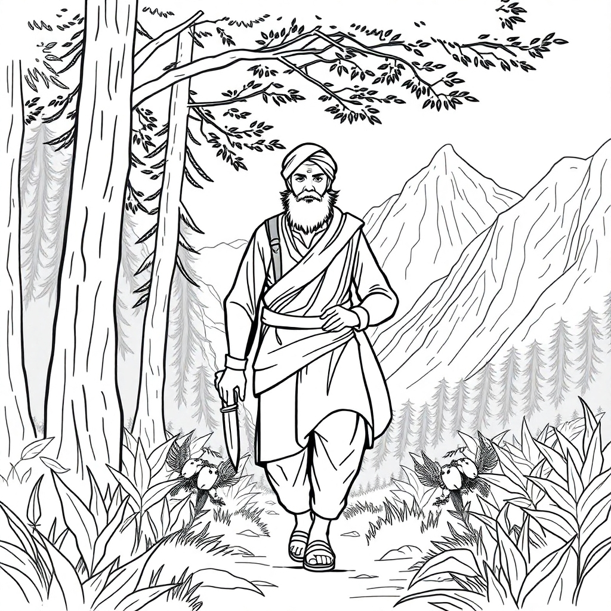
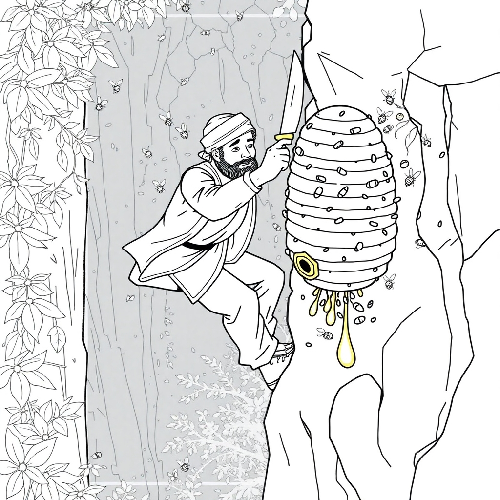
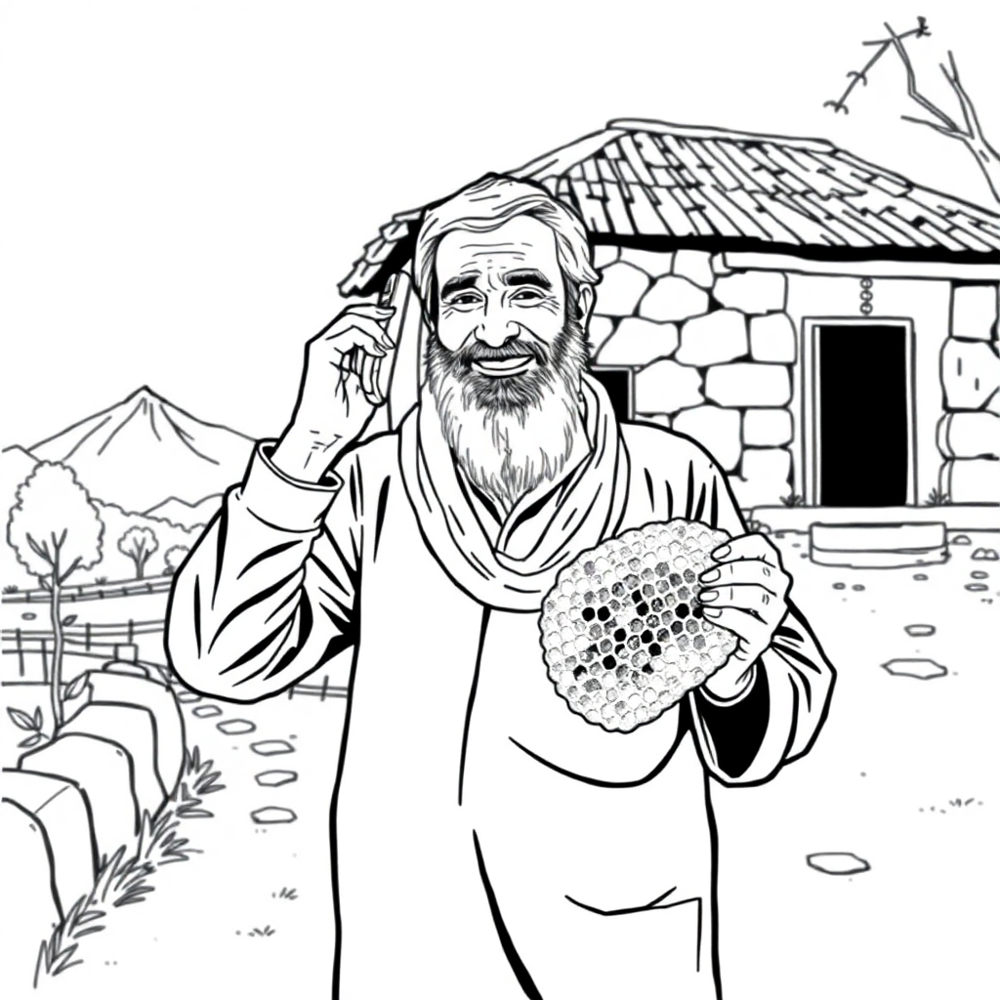

A Sign of Sweet Beginnings
In the rugged hills of KP Karak, a wooden sign sways in the breeze, reading: "Home of Pure Wild Honey." This marks the beginning of our story.

The Call of the Wild Hunter
Meet Gulab Khan, the legendary honey hunter of Karak. With wisdom passed through generations, he ventures into the wild to uncover nature's sweetest treasures.

The Golden Harvest
Gulab Khan carefully ascends a steep cliff, harvesting golden honeycomb from a thriving beehive, a testament to nature's raw and unyielding bounty.

A Trusted Partnership
With his harvest in hand, Gulab Khan reaches out to us, forging a bridge between the purity of nature and our promise to deliver it to you.